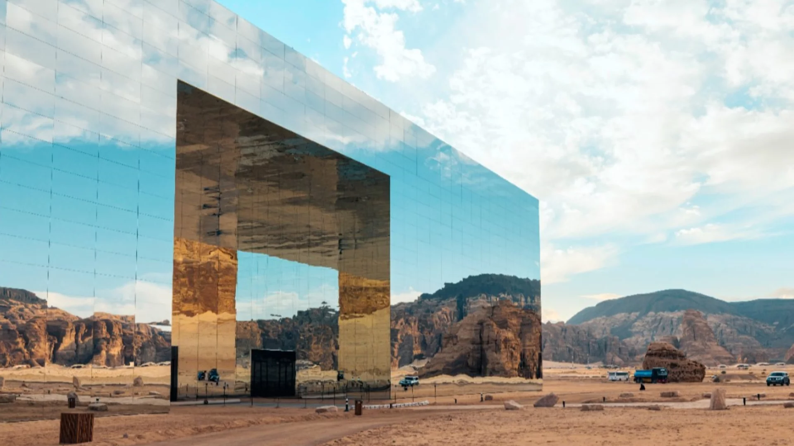

WELCOME TO ARABIA
Reflecting AlUla’s beauty, the world’s largest mirrored buildingF
Step into the realm of Maraya, an architectural marvel in AlUla's Ashar Valley. This mirrored wonder,
blending into the
sandstone cliffs, offers a surreal experience as it appears and disappears with
your
every step.
Holding an Guinness World Records title, Maraya's state-of-the-art structure is covered in 9,740 mirrored
panels. As
sunlight dances across its surface, the building merges seamlessly with the desert like a
mirage, embodying a perfect union
of modernity and nature.